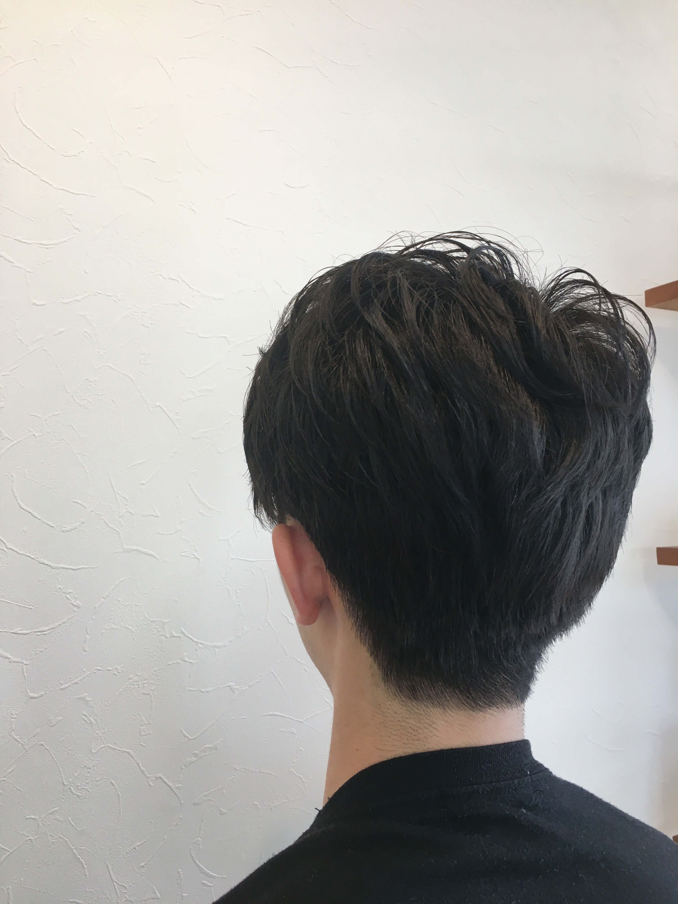

Welcom to Kansan's Home Pege!

Hi! I'm Kansan! I'm university student in Fuk now!
My hobby is watching baseball games!
I don't like English!! So,do not except so much!!!
Click if you want to see
here!!
Contact SNS